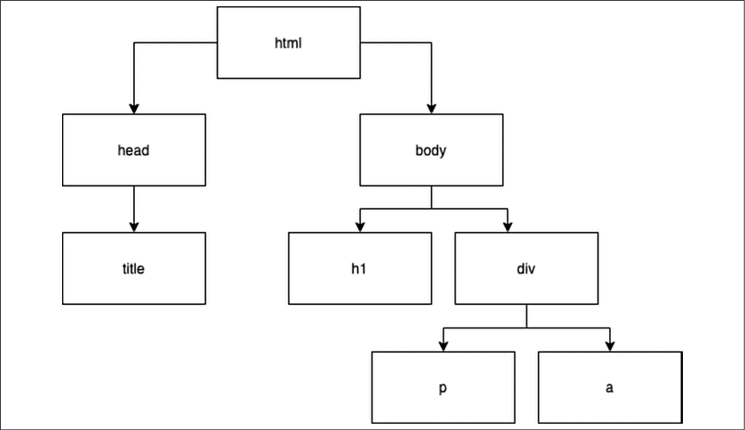

The Document Object Model
DOM is a way of displaying the structure of an HTML document as a logical tree. This is possible because of the very important rule that inner elements need to be closed before outer elements get closed..
The DOM contains the HTML elements on the web page. With JavaScript, we can select and manipulate parts of the DOM. This leads to interactive web pages instead of static ones. So, long story short, being able to work with the DOM means you're able to create interactive web pages!
HTML Elements
HTML consists of words between (<)angle brackets(>), or elements. Any element that gets opened needs to be closed. We open with (<)elementname(>) and we close with (<)/elementname(>).
Elements can contain inner elements. Elements can only be closed if all inner elements have been closed. So, you must always close the inner elements before closing the outer element. We call inner elements child elements, and outer elements parent elements.
HTML Elements (tags) that can be used are: script, p, heading(h1,h2,h3,h4,h5,h6), div, span, button, table, th, tr, td, ul, ol, li, form, input, a, br TAGS
HTML attributes
HTML Attributes influence the HTML element they are specified on. They exist inside the element they are specified on and are assigned a value using an equal sign.
| Attribute name | Description | Can be used on which element? |
|---|---|---|
| id | Gives an element a unique ID, such as age. | All of them |
| name | Used to give a custom name to an element. | input, button, form, and quite a few we haven't seen yet |
| Class | Special metadata that can be added to an element. This can result in a certain layout or JavaScript manipulation. | Almost all of them inside body |
| value | Sets the initial value of the element it is added to. | button, input, li, and a few more |
| style | Gives a specified layout to the HTML element it is added to. | All of them |
Go to Chapter-9 of your JavaScipt book for more details
The BOM (Browser Object Model)
The BOM, sometimes also called the window browser object, is the amazing "magic" element that makes it possible for your JavaScript code to communicate with the browser. The window object contains all the properties required to represent the window of the browser, so for example, the size of the window
We can access the HTML elements and the JavaScript if we go to the inspection panel of our browser by pressing F12 or by doing right click on element or on page and then choose 'inpect element'
We can play with browser objects using 'CONSOLE' tab which is placed next to the 'Elements' tab. Use console.dir() method to access browser objects like 'window', 'history', 'location'
Practice Exercise
Please write href properties of the current file using 'location object' into the console.
The DOM
The DOM of a real web page wouldn't fit on a page in this book. But if you can draw trees like these in your head, it will be of great help soon.
Additional DOM properties
We can inspect the DOM in a similar fashion as we did the others by passing the 'document' or 'window.document'object in console.dir() OR as a STANDALONE object.
we can see the 'document' object, which represents the DOM:We have now got the basics of the BOM down, and its child object that is most relevant to us right now, the DOM.
Selecting page elements
The document object contains many properties and methods. In order to work with elements on the page, you'll first have to find them. If you need to change the value of a certain paragraph, you'll have to grab this paragraph first. We call this selecting the paragraph. After selecting, we can start changing it.
getElementbyId, getElementByClassName, getElementByTagName
Furthermore, To select page elements to use within your JavaScript code and in order to manipulate elements, you can use either the querySelector() or querySelectorAll() method. Both of these can be used to select page elements either by tag name, ID, or class.
The document.querySelector() method will return the first element within the document that matches the specified selectors. If no matching page elements are found, the result null is returned.
The querySelectorAll() method will return a static NodeList, which represents a list of the document's elements that match the specified group of selectors. We will demonstrate the usage of both querySelector() and querySelectorAll() with the following HTML snippet:
Demos for querySelector()
Change the colour using id in querySelector
Change the colour back to original colour using Class Name in querySelector
Change the colour to AQUA colour using (p) tag in querySelector
Demos for querySelectorAll ()
Change the colour using id in querySelector
Change the colour back to original colour using Class Name in querySelector
Calculate the number of (p) tags using querySelectorAll and the total is:
Change the colour using querySelectorAll
Get the attributes of an HTML element and that is:
Set the attributes of one of the HTML element and change its colour to red:
Another example of setting attribute using reusable function.
One more example of setting attribute using reusable function to change the existing IMAGE.